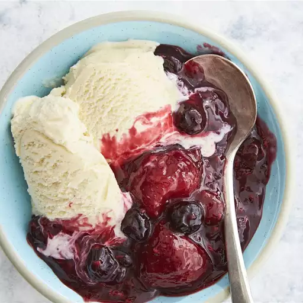

Warm Berry Compote

This berry compote is made in a slow cooker with frozen berries and orange juice. It's a yummy dessert by itself or over ice cream.
- Prep Time:5 mins
- Cook Time: 1 hr 35 mins
- Total Time:1 hr 40 mins
- Servings:6
Ingredients
6 cups frozen mixed berries
½ cup white sugar
¼ cup orange juice
1 ½ teaspoons finely grated orange zest
2 tablespoons cornstarch
2 tablespoons water
-
step1
Stir frozen berries, sugar, orange juice, and orange zest together in a slow cooker. Cover and cook on High until bubbling, about 1 1/2 hours.
-
step2
Stir cornstarch and water together in a cup until fully dissolved. Stir into berry mixture. Cover again and cook until thickened, 5 to 10 minutes. Serve warm or at room temperature.